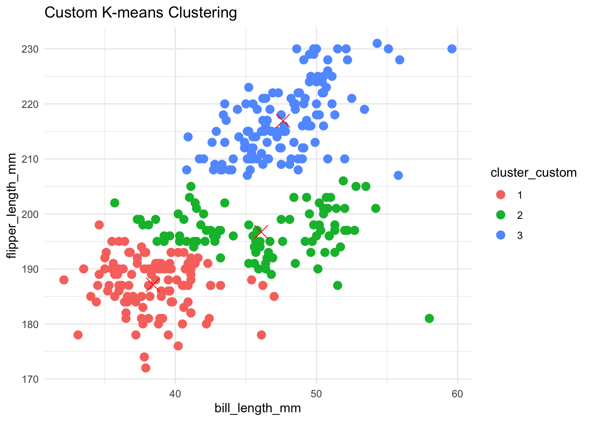
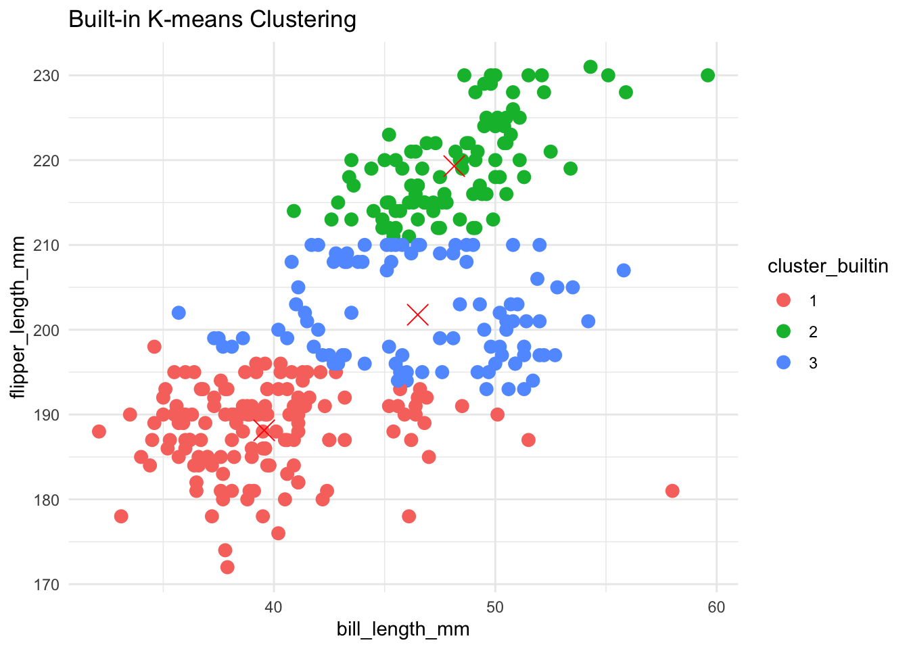
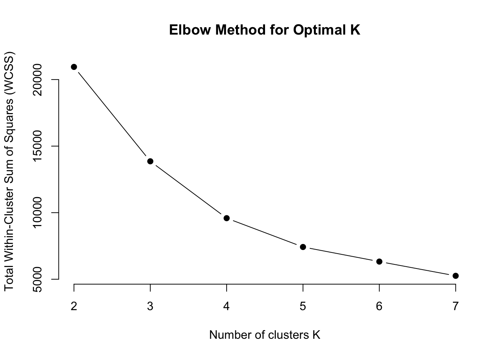
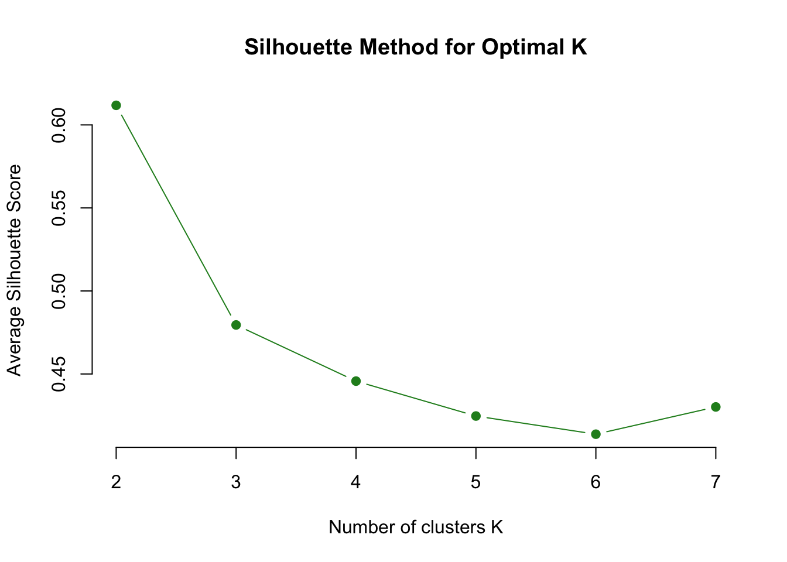
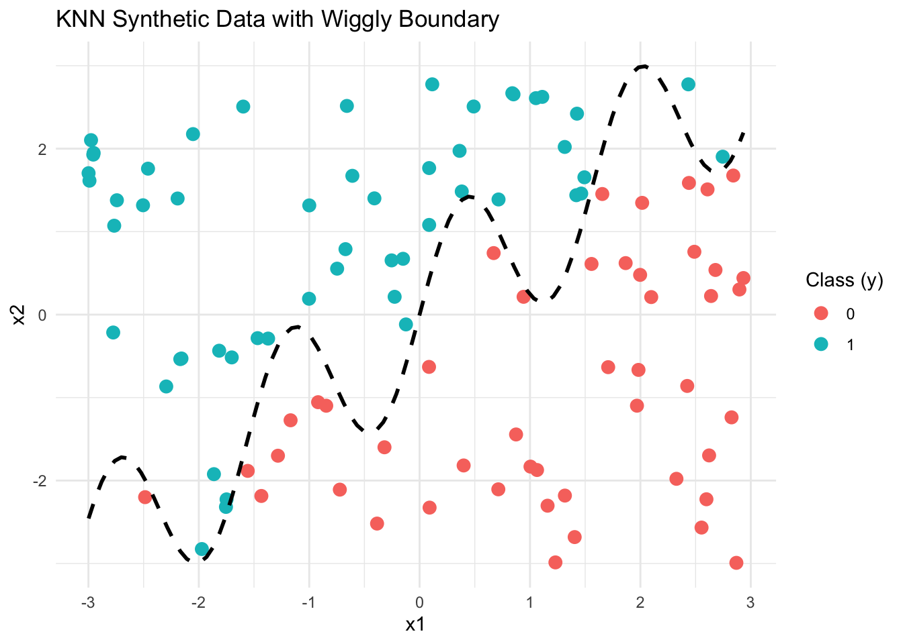

K-Means and K-Nearest Neighbors: Manual Implementation, Visualization, and Evaluation
Author
Eileen Ling
Published
June 9, 2025
todo: do two analyses. Do one of either 1a or 1b, AND one of either 2a or 2b.
1a. K-Means
I implemented the K-means clustering algorithm from scratch in both Python and R to better understand how the algorithm iteratively assigns data points to clusters and updates centroids. To visualize the learning process of the algorithm, I generated plots that show the movement of cluster centers across iterations. I tested my implementation using the Palmer Penguins dataset, focusing specifically on the bill_length_mm and flipper_length_mm variables. To validate the performance of my custom K-means algorithm, I compared the final cluster assignments and centroids to those produced by the built-in kmeans() function in R and the KMeans class from scikit-learn in Python. The results showed that my implementation produced clusters that were visually and numerically consistent with those from the standard libraries.
# Keep only bill_length_mm and flipper_length_mm, and remove missing valuespenguins_clean <-na.omit(penguins[, c("bill_length_mm", "flipper_length_mm")])
penguin_matrix <-as.matrix(penguins_clean)res_custom <-kmeans_custom(penguin_matrix, k =3)penguins_clean$cluster_custom <-as.factor(res_custom$clusters)
Step 5: Plot the Clusters from Your Algorithm
library(ggplot2)ggplot(penguins_clean, aes(x = bill_length_mm, y = flipper_length_mm, color = cluster_custom)) +geom_point(size =3) +geom_point(data =as.data.frame(res_custom$centroids), aes(x = bill_length_mm, y = flipper_length_mm), color ="red", shape =4, size =5) +labs(title ="Custom K-means Clustering") +theme_minimal()

Step 6: Compare with Built-in kmeans()
res_builtin <-kmeans(penguin_matrix, centers =3)penguins_clean$cluster_builtin <-as.factor(res_builtin$cluster)ggplot(penguins_clean, aes(x = bill_length_mm, y = flipper_length_mm, color = cluster_builtin)) +geom_point(size =3) +geom_point(data =as.data.frame(res_builtin$centers), aes(x = bill_length_mm, y = flipper_length_mm), color ="red", shape =4, size =5) +labs(title ="Built-in K-means Clustering") +theme_minimal()

Then, I calculated both the within-cluster sum of squares (WCSS) and the silhouette scores for different values of K (ranging from 2 to 7) using built-in R functions. I then plotted these metrics to visually evaluate the optimal number of clusters. The WCSS plot helped identify the “elbow point,” which indicates where adding more clusters no longer significantly reduces the within-cluster variance. Meanwhile, the silhouette score plot revealed how well-separated and cohesive the clusters are for each K.
Step 1: Load and Prepare the Data
# Load required librarieslibrary(cluster) # for silhouette()library(factoextra) # for fviz_nbclust()
Welcome! Want to learn more? See two factoextra-related books at https://goo.gl/ve3WBa
library(ggplot2)# Load the datapenguins <-read.csv("palmer_penguins.csv")# Clean the datapenguins_clean <-na.omit(penguins[, c("bill_length_mm", "flipper_length_mm")])
Step 2: Calculate WCSS for K = 2 to 7
# Function to compute total within-cluster sum of square wcss <-numeric()for (k in2:7) { km <-kmeans(penguins_clean, centers = k, nstart =25) wcss[k -1] <- km$tot.withinss}# Plot WCSS (Elbow Method)plot(2:7, wcss, type ="b", pch =19, frame =FALSE,xlab ="Number of clusters K", ylab ="Total Within-Cluster Sum of Squares (WCSS)",main ="Elbow Method for Optimal K")

Step 3: Calculate Silhouette Scores for K = 2 to 7
sil_scores <-numeric()for (k in2:7) { km <-kmeans(penguins_clean, centers = k, nstart =25) sil <-silhouette(km$cluster, dist(penguins_clean)) sil_scores[k -1] <-mean(sil[, 3]) # average silhouette width}# Plot Silhouette Scoresplot(2:7, sil_scores, type ="b", pch =19, col ="forestgreen", frame =FALSE,xlab ="Number of clusters K", ylab ="Average Silhouette Score",main ="Silhouette Method for Optimal K")

Step 4: Interpretation
After generating both plots:
Look for the elbow in the WCSS plot → likely K = 3.
Look for the peak in the silhouette plot → likely K = 2 or 3.
2a. K Nearest Neighbors
I generated a synthetic dataset to explore the K-Nearest Neighbors (KNN) classification algorithm. The dataset included two continuous features, x1 and x2, each drawn from a uniform distribution over the range [-3, 3]. I then defined a nonlinear, wiggly decision boundary using the function sin(4 * x1) + x1. The binary outcome variable y was assigned based on whether each point fell above or below this boundary. Specifically, points where x2 exceeded the boundary were labeled as class 1, and the rest were labeled as class 0. The resulting data was stored in a data frame with columns x1, x2, and y.
# gen data -----set.seed(42)n <-100x1 <-runif(n, -3, 3)x2 <-runif(n, -3, 3)x <-cbind(x1, x2)# define a wiggly boundaryboundary <-sin(4*x1) + x1y <-ifelse(x2 > boundary, 1, 0) |>as.factor()dat <-data.frame(x1 = x1, x2 = x2, y = y)
I created a scatterplot of the synthetic dataset, using x1 as the horizontal axis and x2 as the vertical axis. The points were colored based on the binary outcome variable y, allowing for a clear visual separation of the two classes. Additionally, I overlaid the wiggly decision boundary defined by the function sin(4 * x1) + x1 to illustrate how the boundary divides the feature space. This visualization helps demonstrate the nonlinear nature of the classification task for the K-Nearest Neighbors algorithm.
# Plot data points and add wiggly boundaryggplot(dat, aes(x = x1, y = x2, color = y)) +geom_point(size =3) +stat_function(fun =function(x) sin(4* x) + x, color ="black", size =1, linetype ="dashed") +labs(title ="KNN Synthetic Data with Wiggly Boundary",x ="x1",y ="x2",color ="Class (y)") +theme_minimal()
Warning: Using `size` aesthetic for lines was deprecated in ggplot2 3.4.0.
ℹ Please use `linewidth` instead.

I generated a separate test dataset consisting of 100 points using the same process as the training data, but with a different random seed to ensure the test data is independently sampled. This dataset was created by sampling x1 and x2 values from a uniform distribution between -3 and 3, and assigning binary class labels based on whether each point fell above or below the nonlinear boundary defined by sin(4 * x1) + x1.
# Generate test dataset -----set.seed(999) # different seed than training datan_test <-100x1_test <-runif(n_test, -3, 3)x2_test <-runif(n_test, -3, 3)boundary_test <-sin(4* x1_test) + x1_testy_test <-ifelse(x2_test > boundary_test, 1, 0) |>as.factor()test_dat <-data.frame(x1 = x1_test, x2 = x2_test, y = y_test)
I implemented the K-Nearest Neighbors (KNN) classification algorithm from scratch in R. For each test point, I calculated its Euclidean distance to all training points, identified the k nearest neighbors, and used majority voting to assign a predicted class label. To validate my implementation, I also used the built-in class::knn() function as a benchmark and confirmed that my manual predictions closely matched the built-in results. This comparison helped ensure the correctness of my algorithm and deepened my understanding of how KNN operates under the hood.
# Custom KNN function (k = 5 by default)knn_manual <-function(train_x, train_y, test_x, k =5) { predict_y <-vector("character", nrow(test_x))for (i in1:nrow(test_x)) { distances <-sqrt(rowSums((t(t(train_x) - test_x[i, ]))^2)) neighbors <-order(distances)[1:k] labels <- train_y[neighbors] predict_y[i] <-names(sort(table(labels), decreasing =TRUE))[1] }return(as.factor(predict_y))}# Run manual KNNmanual_preds <-knn_manual(train_x = dat[, 1:2],train_y = dat$y,test_x = test_dat[, 1:2],k =5)
I evaluated the performance of my manually implemented KNN algorithm for values of k ranging from 1 to 30. For each value of k, I predicted the class labels of the test dataset and calculated the percentage of correctly classified points by comparing the predictions to the true labels. I then plotted the classification accuracy as a function of k, with the horizontal axis representing k values from 1 to 30 and the vertical axis representing the classification accuracy (in percentage). The plot revealed how the performance of KNN varied with different neighborhood sizes and helped identify the optimal value of k that maximized prediction accuracy.
# Accuracy trackeraccuracies <-numeric(30)# Ensure test labels and prediction levels matchtrue_labels <-factor(test_dat$y, levels =levels(dat$y)) # Align test labels to training levels# Loop through k = 1 to 30for (k in1:30) { preds <-knn_manual(train_x = dat[, 1:2],train_y = dat$y,test_x = test_dat[, 1:2],k = k)# Align prediction levels preds <-factor(preds, levels =levels(dat$y))# Compute accuracy acc <-mean(preds == true_labels) accuracies[k] <- acc *100# convert to percentage}# Plot accuracy vs. kplot(1:30, accuracies, type ="b", pch =19,xlab ="Number of Neighbors (k)",ylab ="Accuracy (%)",main ="KNN Accuracy vs. k",col ="blue")